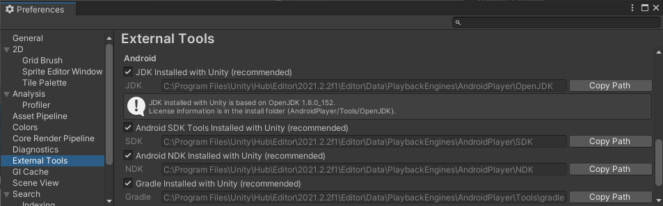
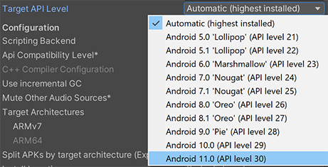

Android environment setup
To create a Unity application for Android, you first need to set up your Unity project to support Android. To support Android, a Unity project requires the following dependenciesIn the context of the Package Manager, a dependency is a specific package version (expressed in the form package_name@package_version) that a project or another package requires in order to work. Projects and packages use the dependencies attribute in their manifests to define the set of packages they require. For projects, these are considered direct dependencies; for packages, these are indirect, or transitive, dependencies. More info
See in Glossary:
- The Android Build Support module.
- The Android Software Development Kit (SDK).
- The Native Development Kit (NDK).
- A Java Development Kit. By default, Unity uses OpenJDK.
Before you get started, check Unity’s Requirements and compatibility documentation for Android to make sure you’re aware of any limitations for developing a Unity application for Android.
Installing dependencies
Unity distributes dependencies as modules which means you use the Unity Hub to install them. You can install them either when you install a new Unity Editor version, or add them to an existing Unity Editor install. To install modules:
- At install time, see Downloading and installing Editors and modules with the Unity Hub.
- To an existing install, see Add modules.
The three modules to install are:
- Android Build Support
- Android SDK & NDK Tools
- OpenJDK
Unity installs Android SDK & NDK Tools and OpenJDK respectively in the SDK, NDK, and OpenJDK folders under /Unity/Hub/Editor/[EditorVersion]/Editor/Data/PlaybackEngines/AndroidPlayer/.
Customizing dependencies
You should use the Unity Hub to install Android SDK & NDK tools and OpenJDK to ensure that you receive the correct versions and configurations. However, there are situations where it’s useful to change the SDK, NDK, or JDK that Unity uses to build applications for Android. For example, if you have multiple versions of Unity with the same dependencies and you don’t want to duplicate the installation of the SDK, NDK, and JDK, you can specify a shared location.
To make Unity use a custom version of a dependency:
- Download the custom version of the dependency.
Warning: Unity only officially supports versions of the OpenJDK, SDK, or NDK that it supplies through the Hub. For more information, see Supported dependency versions. - In Unity, select Edit > Preferences (macOS: Unity > Preferences).
- In the left navigation column, select External Tools. The Android section of the External Tools panel contains entries for JDK, SDK, NDK, and GradleAn Android build system that automates several build processes. This automation means that many common build errors are less likely to occur. More info
See in Glossary. Each entry contains:- A checkbox that indicates whether to use the version that Unity provides or a custom version.
- The path to the dependency’s installation folder.

- To customize the installation for any of these dependencies, disable the dependency’s respective …installed with Unity (recommended) checkbox then click Browse and select the installation folder for the custom dependency.
Supported dependency versions
This section contains information on which versions of each dependency each Unity version supports. Each version of Unity requires a specific version of the Android NDK and Android JDK, but there are no exact version requirements for the Android SDK.
SDK
Unity relies on tools that the Android SDK provides and different versions of the SDK usually have the same tools available. This means you can use any recent version of the SDK since they all contain the build tools that Unity requires.
Important: The only exceptions are Android SDK Build-tools versions higher than version 30. Unity doesn’t support Android SDK Build-tools versions higher than 30.
NDK
The following table shows the NDK version that each Unity version supports:
| Unity version | NDK version |
|---|---|
| 2019.4 LTS | r19 |
| 2020.3 LTS | r19 |
| 2021.2 | r21d |
JDK
The following table shows the JDK version that each Unity version supports:
| Unity version | JDK version |
|---|---|
| 2019.4 LTS | 8 (OpenJDK version 1.8) |
| 2020.3 LTS | 8 (OpenJDK version 1.8) |
| 2021.2 | 8 (OpenJDK version 1.8) |
Setting the Android SDK Target API
The Unity Hub installs the latest version of the Android SDK Target API that Google Play requires. If you need to use a more recent version, you can change it in the Android Player Settings. To do this:
- Select Edit > Project Settings.
- In the Project settings window, select the Player tab, then open Android Player Settings:

- In the Other Settings section, change the Target API Level.

If you select a target API version newer than the latest installed version, the Unity Android SDK Updater can automatically download and install the new version. Unity displays a prompt and you can choose to either:
- Automatically download and install the new version of the Android SDK.
- Continue to use the highest installed version of the Android SDK.
If you select a target API version that isn’t installed and is older than the latest installed version, the Unity Android SDK Updater can’t perform the update and Unity displays an error message. In this case, to update the Android SDK Target API, you must use the Android sdkmanager from either Android Studio or the command-line tool. Regardless of the method you choose, make sure to select the correct Android SDK folder for Unity in the Edit > Preferences > External Tools window. For more information, see Customizing dependencies.
Important: On Windows, if you installed the Unity Editor in the default folder (/Program Files/), you must run the sdkmanager with elevated privilege (Run as Administrator) to perform the update.
Chrome OS
In Unity, Chrome OS is part of the Android development environment. This means you can deliver new and existing Android applications to Chrome OS. Also, since many Chrome OS devices are laptops or have a laptop mode, you can use features such as mouse and keyboard input. For more information:
- On Chrome OS in Unity: Chrome OS.
- On how to build an Android application for Chrome OS: Building your Chrome OS application.